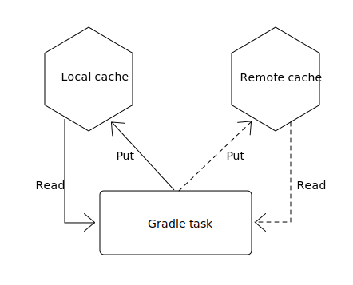

$> gradle --build-cache assemble
Build cache is an incubating feature.
:compileJava FROM-CACHE
:processResources
:classes
:jar
:assemble
BUILD SUCCESSFULExtreme developer productivity with Gradle
Stefan Wolf (@wolfs42), Gradle
Overview of Gradle
Gradle
(management summary)
Multi purpose software automation tool
Build, automate and deliver better software, faster
Cross-platform
Language agnostic
Apache v2 licensed
A Build Tool + Gradle Enterprise (on premise + cloud)
Momentum
~30 full time engineers working on Gradle
3.0 released on August 15th 2016
3.5 released on April 10th 2017
4.0 released on June 14th 2017
4.1 released on Aug 8th 2017
Releasing every 4 - 6 weeks.
3-5 million downloads per month
What is Gradle Enterprise?
Gradle Enterprise is a platform on top of the Gradle build tool that allows to maximize productivity of developers and build teams, hosted on-premises.
The feature sets
Developer productivity
Influences on
developer productivity
IDE
Languages and frameworks
Good hardware
Training
Food in cafeteria
Four pillars of
developer productivity
Fast feedback cycles
High degree of automation
Faster debugging
Productivity culture
Fast feedback cycles
Maximum build performance
Measure and optimize
Build reliability
Maximum build performance
Maximum build performance is the maximum achievable performance of a build system for your code base.
Test projects
Large monolithic: 1 prj, 50000 src
Small multiproject: 10 prj, 100 src/prj
Medium multiproject: 100 prj, 100 src/prj
Large multiproject: 500 prj, 100 src/prj
Gradle is up to 100 times faster than Maven
How
Compile avoidance
Incremental compilation
Build cache
Gradle is reusing results
from last time
when we ran this build
on this machine.

Gradle can do better
Why not…
from anytime before
when we ran any build
anywhere.

Build cache
Build cache - Demo
Build cache
Stable for Java, Groovy and Scala projects
Gradle Enterprise provides a backend
Dockerhub: gradle/build-cache-node
Measure and optimize
Need data
CI server captures times
What about developer builds
Enter build scans
What are build scans?
Persistent record of what happened during a build
Permanent and shareable URL
For developers and build engineers
Build scans - Demo
Measure and optimize
Need data
Use the Gradle Enterprise export API
Export API
Build reliability
Reliable parallelism
Cache is a forcing function
Build scans for debugging
Build performance and build scans - Demo
Higher degree of automation
Composite build
Works now with --continuous
Excellent IDE integration (Eclipse/Intellij)
Parallel composite build
Composite build - roadmap
Integration with build scans
Make substitution configureable
Composite task names
Faster debugging
Build scans!
Traceability
Custom values
Productivity Culture
Accountability
Professionalization
Product vs Support
Developer experience
Guides
Kotlin DSL
Kotlin DSL version 0.10 (Gradle 4.1)
Statically typed
Good IDE support
More resources
Gradle Enterprise: https://gradle.com
Gradle Build Tool: https://gradle.org
Gradle Summit 2017 videos: Youtube